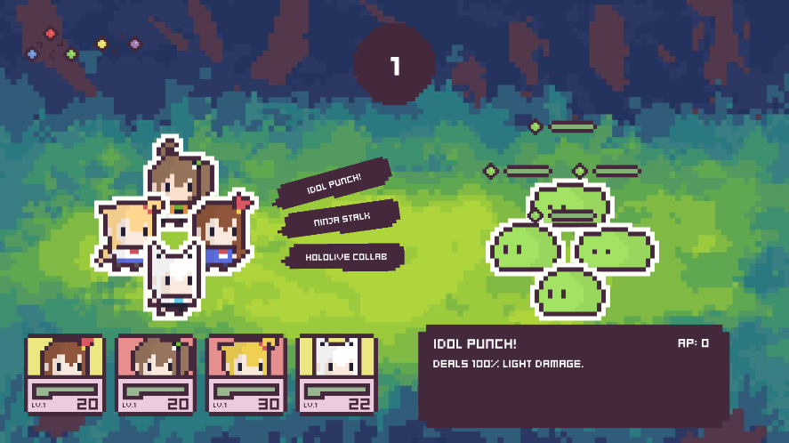
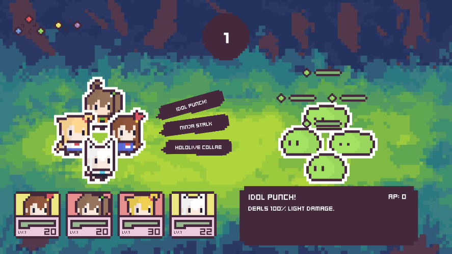
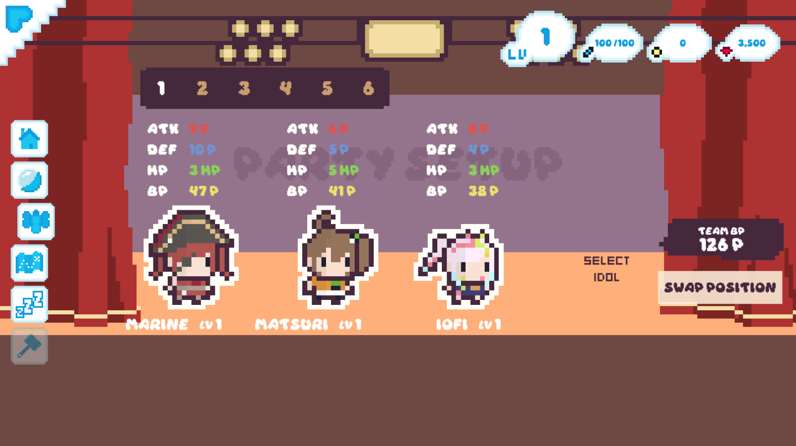
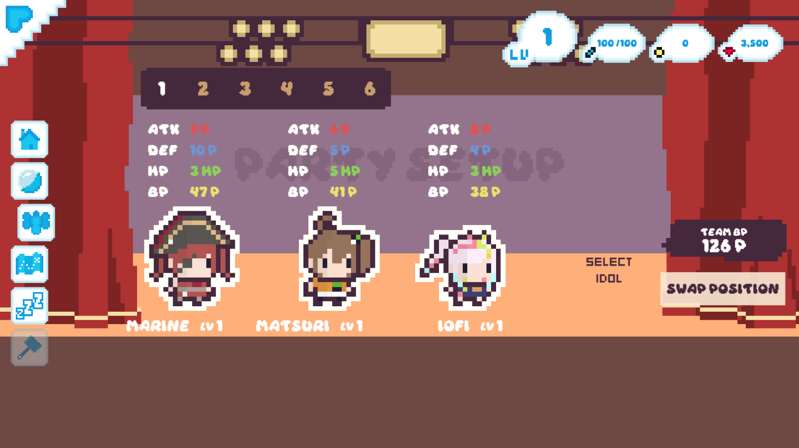
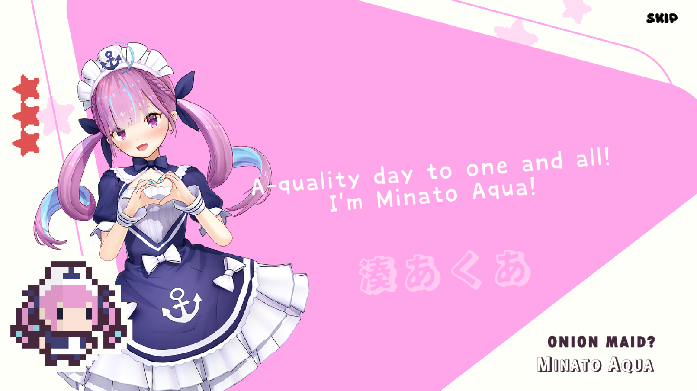
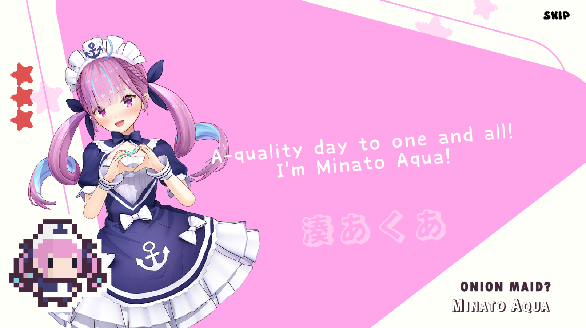
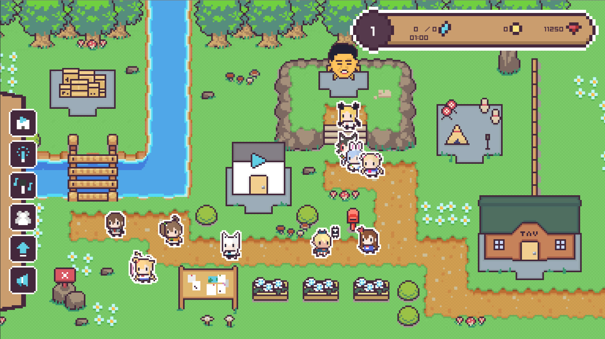
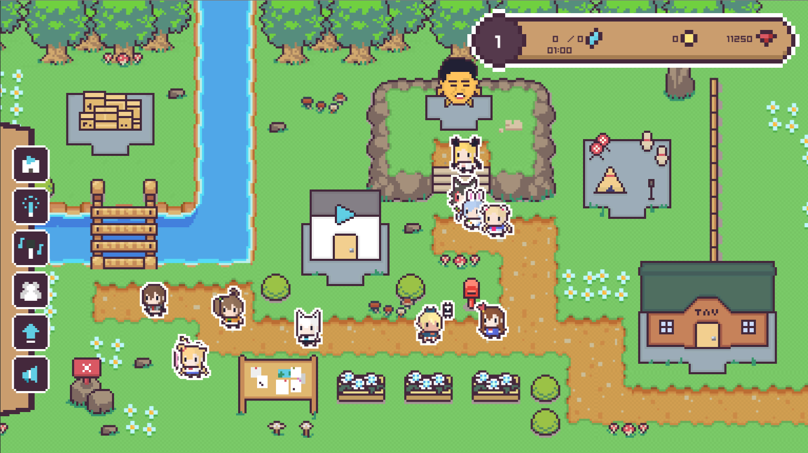

Battle
Into the Holoverse offers an engaging turn-based RPG-style
battle system, where players engage in dynamic 4v4 rotational
battles. The game employs an Action Point (AP) cost system, with
a maximum cap of 10. These action points are vital for utilizing
more potent skills. Players familiar to gacha games may also
notice the 5 element system often used in many combat games.

The player's turn begins with the selection of a skill based on the vanguard character. Every character possesses a basic skill that comes with a low AP cost of 0~1, ensuring they can always take action even if their AP is limited. Once the action is executed, the enemy vanguard retaliates in kind. Subsequently, both units rotate out, paving the way for the next unit to take its turn.

The player's turn begins with the selection of a skill based on the vanguard character. Every character possesses a basic skill that comes with a low AP cost of 0~1, ensuring they can always take action even if their AP is limited. Once the action is executed, the enemy vanguard retaliates in kind. Subsequently, both units rotate out, paving the way for the next unit to take its turn.
Characters
In 'Into the Holoverse,' the characters are affiliated with
Hololive, encompassing streamers from the Japanese, English, and
Indonesian branches. Additionally, some staff and personnel
associated with these streamers have been transformed into
characters within the game.
Every character boasts a repertoire of three active skills and one passive skill. These passive abilities can be triggered under various conditions, such as upon spawning, when their HP dips below a specific threshold, or when they occupy a particular position. On the other hand, active skills require the expenditure of AP, sometimes as little as 0. Players must adeptly manage their party composition and master the intricacies of AP gain and loss mechanics to unleash more formidable abilities.

Skills are based on streamer's iconic activities or moments.
Every character boasts a repertoire of three active skills and one passive skill. These passive abilities can be triggered under various conditions, such as upon spawning, when their HP dips below a specific threshold, or when they occupy a particular position. On the other hand, active skills require the expenditure of AP, sometimes as little as 0. Players must adeptly manage their party composition and master the intricacies of AP gain and loss mechanics to unleash more formidable abilities.

Skills are based on streamer's iconic activities or moments.
Gacha
The standout feature of 'Into the Holoverse', lies in its
captivating gacha system. This game taps into the shared fanbase
of Hololive and gamers, particularly those who relish Japanese
gaming experiences, including gacha mechanics. The thrill of
pulling your cherished 'oshi' and assembling a team to let her
truly shine is an immensely gratifying experience.

In line with the fan-made and fan-oriented spirit of this free game, the gacha rate is notably generous at 5%. This stands in stark contrast to other gacha-heavy titles like Fate Grand Order or Genshin Impact, which often have rates of 1% or even lower. The primary goal of this game is pure enjoyment, sans any financial involvement, ensuring a higher likelihood of obtaining the characters you desire.

In line with the fan-made and fan-oriented spirit of this free game, the gacha rate is notably generous at 5%. This stands in stark contrast to other gacha-heavy titles like Fate Grand Order or Genshin Impact, which often have rates of 1% or even lower. The primary goal of this game is pure enjoyment, sans any financial involvement, ensuring a higher likelihood of obtaining the characters you desire.
Others
Additional game mechanics in 'Into the Holoverse' encompass
resting, progression, and missions. Resting enables characters
to recover outside of combat by assigning them to their
dedicated rooms for recuperation. Progression in the game
entails leveling up characters, thereby enhancing their
statistics, refining their skills, and engaging in equipment
farming and upgrades. The mission system is categorized into
daily and monthly tasks, a staple of gacha games. Furthermore,
there are attainable monthly milestones that provide players
with easily achievable objectives, in addition to the customary
daily quests.

Characters acquired also appear in the main menu, walking around and are interactable.

Characters acquired also appear in the main menu, walking around and are interactable.